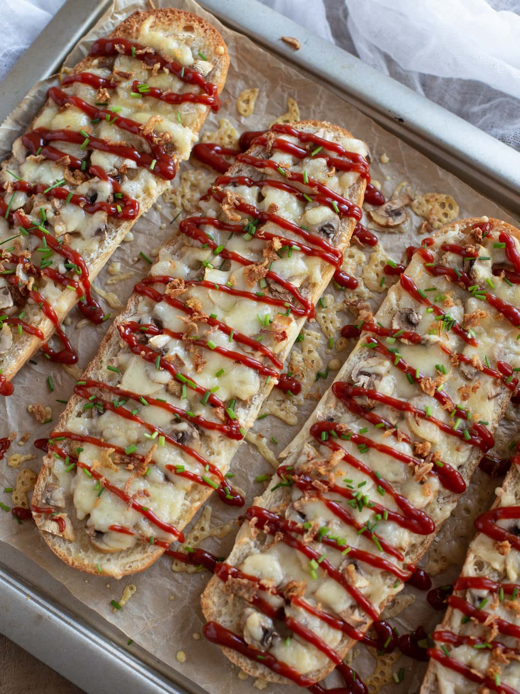

Zapiekanka

a popular street food in poland
The zapiekanka is a delicious type of open faced sandwhich that primarily composes of bread butter and cheese
but very commonly includes mushrooms and ham in its composition its often served with ketchup.
Ingredients
- any type of bread
- any type of cheese
- butter
- mushrooms
Steps
- Prepare and pan fry your mushrooms
- slice your bread
- butter your bread
- place mushrooms and cheese onto bread
- bake in oven for 375 until it looks good